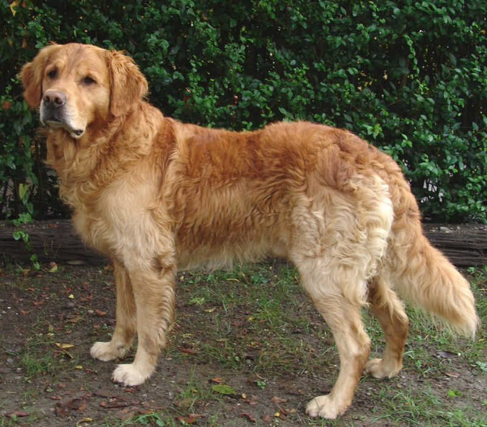

生命5–11 岁本地观察
哺乳动物观察站
认兽先看证据：宝宝喝奶、多数身上有毛、用肺换气。狗用四条腿跑，蝙蝠用皮膜飞，鲸用水平尾上下摆——那是怎么过日子，不能单独决定「是不是兽」。两层搅在一起，就会把海豚判成鱼。鸭嘴兽下蛋却仍用乳汁养幼，鲸豚体毛极疏仍属哺乳：例外要单开一行。台上「保温」读数只比较毛皮和代谢，不是某一种兽的体温表。园里远观、不投喂、不敲玻璃，萌态不是可摸许可证。

两只动物站到台上来


舞台空着。到图鉴里点两只不一样的哺乳动物。
哺乳保温台 · 真参数
调毛皮隔热与代谢产热。多数哺乳靠毛/脂保温，再用食物能量「烧炉子」——奶喂幼崽是线索，不是所有都厚毛。
毛隔热，代谢产热。拖滑杆看体温能不能稳住。
先猜一猜，再拖滑杆
第 1 题：毛皮够、代谢够（毛皮 32、代谢 10）。毛隔热再加代谢产热，还是会游泳就是鱼？
先押一个，再拖到 毛皮隔热 32、代谢产热 10。
第 2 题：毛皮 5、代谢 3，还够稳吗？
押好后拖到 毛皮隔热 5、代谢产热 3。
第 3 题：毛皮最少 4、代谢最弱 2。还能明显够稳吗？
押好后毛皮 4、代谢 2。
哺乳动物图鉴
下面有 12 张卡。点两张，比它们怎么动。再点一次同一张可以取消。
还没选动物。点两张卡，比一比怎么动。
猜一猜
哺乳动物怎么动，主要跟什么绑在一起？
先押一个，再点「看答案」。
任务：选两只，说出它们怎么动不一样
先点两张图鉴卡。再给每一只挑一个动作。两个动作必须不一样，然后点「记下这次比较」。
第一只怎么动
第二只怎么动
开放式提示不会代替上面的正式任务。
尚未完成：先在图鉴里点两只不一样的动物。
怎样用证据认兽，而不是用腿数投票
先写证据清单，再写动作。亲眼看到喂奶，是最硬的一条；只看到毛、或只看到水面喷气用肺，是间接线索。展板上写「哺乳动物」，也要能追到来源：行为、解剖模型，还是物种名背书？没看见奶，就写「还不知道」，不要硬编。
再单开一栏写生活方式：跑、飞、游、跳、掘。这一栏回答「怎么过日子」，不单独决定「是不是兽」。海豚会游泳，证据仍是奶和肺，不是鳃；蝙蝠会飞，翅膀是指骨撑着皮膜，不是鸟的羽毛。鸭嘴兽下蛋却仍用乳汁养幼，鲸豚体毛极疏仍属哺乳——例外用来练「哪一条更重」，不是用来把分类推翻。
因为投喂会改食谱、敲玻璃是噪声、「很想摸」会挤掉距离，所以园里远观、不投喂、不敲玻璃。台上「保温≈毛皮×代谢÷16」是本页比较尺子：毛够、代谢够，数字变大；两边都弱，更偏凉。阈值 10 只是本页分界，不是某一种兽的体温表，更不是饲养课。
先证据后动作；会游泳不能证明是鱼
同一只动物，先只改「认亲还是认日子」这一项。证据栏写奶、毛、肺；动作栏写跑、飞、游、跳。谁先喊「它会游泳所以是鱼」，就把问题拆回两栏：你在用鳃和卵，还是用奶和肺？这样比，才知道「在水里」不能单独投票。
完成句写「奶、毛、肺认亲」或「会游泳不是证据」，不要写「都好可爱」。比较必须说出至少两个能看见的差异：肢端、推进面或活动时段。园里不投喂、不敲玻璃、不追着摸。
宝宝喝奶是最强证据。远观，不打扰正在哺乳，也不投喂改它自己的食谱。
鲸豚体毛极疏仍属兽。「无毛就不是兽」要划掉，证据仍是奶、肺和下颌一块骨。
水面喷气是肺呼吸线索，不是鱼鳃故事。鳃和卵不要填进哺乳这一栏。
蝙蝠用指骨撑着皮膜飞，是持续动力飞行的兽，不是鸟把羽毛换成了皮。
鲸用水平尾上下摆，鱼多半左右摆。怎么过日子，不能单独决定是不是兽。
投喂会改它的食谱，让它学会向人讨吃。园里远观，阳台猫狗也不喂陌生食物。
- 列证据。指出至少两条「像兽」的线索，并注明亲眼见还是读展板。
- 比动作。舞台上两只：肢端或推进方式差在哪？
- 拆误会。若有人说海豚是鱼，你用哪一栏证据反驳？
- 守园规。为什么「想摸」不能盖过距离与安静？
哺乳动物宝宝喝奶长大，身上常常有毛；看动物要安静，不塞零食。
证据栏写奶、毛、肺，动作栏写跑、飞、游、跳。海豚会游泳仍是兽，因为用肺、宝宝喝奶。蝙蝠真飞，翅膀是皮膜。园规写进任务。本页数字只比较保温，不是体温表。
鸭嘴兽产卵仍用乳汁；鲸豚体毛极疏仍属兽。单孔类与耳区骨骼只点到。分类不是人格等级，不要写成「高等哺乳」。
这在教什么：孩子应能用喂奶、毛、肺换气当证据认兽，而不用「会游泳所以是鱼」。完成看的是两栏对照，不是背「哺乳动物」四个字。因为投喂会改食谱、敲窗是噪声，所以远观不投喂、不敲玻璃。
- 你看见了几条「像兽」的证据？哪一条是亲眼见，哪一条是读展板？
- 舞台上两只，肢端或推进方式差在哪？能只写「都好可爱」吗？
- 海豚为什么是兽？「会游泳」能当证据吗？
- 园里能投喂、能敲玻璃吗？「很想摸」能盖过距离吗？
幼体窗口：怎样记哺乳才不算打扰
若看见哺乳，优先记时间、大概距离、母幼是否因为你挪了位置——不要为「更清楚」再靠近。人一近，行为就变，你记下的就不再是原来那一幕。没看见奶，就写「还不知道」，不要硬编。
展板写「哺乳动物」时，追问依据：行为、解剖模型，还是物种名背书？强度不同。比较狗和马时盯肢端：爪垫好转弯，硬蹄更适合一直跑。夜间馆的蝙蝠：翅膀是指骨撑着皮膜，对照羽毛页时只比「都能飞」，不比骨头是不是同一套。
因为投喂会改食谱、闪光和喊叫会吓散母幼，所以不追、不喊、不闪光。台上保温数字只比较毛皮和代谢，不是某一种兽的体温表。
不追、不喊、不闪光。人一近行为就变，拍到的就不是它平时自己的日子。
展板上的话要能追到出处，编出来的不算。没看见奶或肺就写「还不知道」。
没看见证据就写「还不知道」，不要硬编聪明懒坏。台上保温是比较尺子。
爪垫好转弯，硬蹄更适合一直跑。这是过日子的零件，不是认亲的证据。
蝙蝠的翅膀是指骨撑着皮膜，不是鸟的羽毛。飞的方式不同，认亲仍算兽。
人一近行为就变。远观才看得见它自己的日子，不是给游客表演的节目。
对照卡：证据栏 vs 动作栏
三列用同一只动物拆两栏。甲：证据栏——幼鲸贴近母体腹侧吸吮，体表光滑但水面喷气可见，用的是肺。乙：动作栏——狗爪垫抓地转弯，马蹄更适一直跑，袋鼠后腿加尾巴撑着跳。丙：否决句「会游泳所以是鱼」。吵架时先问对方在填哪一栏。
完成标准：两栏各至少一句，园规红线写在末行。鱼的鳃和卵不要填进哺乳这一栏。本页保温读数只比较方向，不是物种鉴定，也不是体温说明书。
奶、毛、肺和下颌一块骨，用来认它是不是亲戚。完成句先写这一栏证据。
跑、飞、游、跳只记怎么过日子；和证据栏搅在一起，就会把海豚错判成鱼。
鲸住在海里，证据仍是奶和肺，不是鳃。鸭嘴兽下蛋，却仍用乳汁养幼，仍是兽。
鱼的鳃和卵不要填进哺乳这一栏。例外要单开一行，不要改掉主证据。
先问对方在填证据栏还是动作栏，再一起看。两栏各写一句才算对照。
两栏各写一句，最后再写一条园规红线：不追、不喂、也不要对着它闪光。
十二张图鉴：怎样挑出「真差异」
优先挑运动方案差得大的一对：蝙蝠对鲸鱼、袋鼠对马，逼出推进面和肢端语言。若两只都很「会跑」，就再问时段和感官：猫的瞳孔缝夜里看得清，狗更会靠闻一路巡。每次比较结尾写一句「若只有毛、或只会游，证据够不够」。
口头只要两句：「先看奶、毛、肺，再看怎么动。」「会游泳不能证明是鱼。」有人说「海豚是鱼」，让孩子指着喷气和奶反驳。不要用聪明、懒、坏收尾，改写腿、翼或鳍。
阳台猫狗也可记，规则相同：不投陌生动物食物，不追拍。园里远观、不敲玻璃。本页保温数字不要抄进饲养手册。
先挑飞和游差得最大的一对来比。蝙蝠和鲸都是兽，过日子完全不同。
两只都会跑，就再比夜里看还是靠闻。动作栏可以继续挖，证据栏先钉死。
只看见毛或只会游，还不够给它定性。先找奶和肺，再谈它怎么过日子。
不要写聪明懒坏，改写它的腿、翼或鳍。品德词不能当完成句，也不算证据。
阳台猫狗也不要投陌生食物。投喂会改找人习惯，园里更不能扔食去逗。
图鉴 12 张卡要对照写在一起：谁有奶和肺，谁其实是鱼或鸟，千万不要混栏。
怎样才算公平的一次比较
想知道「会游泳是不是鱼」，就只改证据这一项。同一只海豚，先看有没有奶、肺、喷气，再另开一行看尾巴怎么摆。把「它在海里」叠进同一档，分不清到底是认亲错了，还是日子过在水里。
- 只改这一项：证据栏（奶、毛、肺）还是动作栏（跑、飞、游）。
- 先保持不变：同一只动物、同一片场地。
- 要观察的：有没有喂奶或喷气换气；肢端或推进面差在哪。
- 另开一行：园规、例外（鸭嘴兽、鲸豚疏毛）、本页保温尺子，各记各的。
还可以问下去
- 只看到「在水里游」，还缺哪一栏才能说海豚是兽？鳃和卵能填进哺乳栏吗？
- 蝙蝠的翅膀和鸟的翅膀，都用来飞。比功能可以，比骨头是不是同一套，该怎么分开讲？
- 没看见奶，能假装看见了吗？「不知道」为什么也算合法答案？人一靠近，记下的还是原来那一幕吗？
按年龄分层的讲法
同一个现象，三个年龄段讲到哪一层。建议只讲孩子当前那一层，讲完就停，不要把耳区骨骼提前塞进四岁耳朵。
哺乳动物宝宝喝奶长大，身上常常有毛，用肺呼吸。看动物要安静，不塞零食，不敲玻璃。
证据栏和动作栏分开。海豚会游泳仍是兽，因为用肺、宝宝喝奶。蝙蝠真飞，翅膀是皮膜。本页数字只比较保温，不是体温表。
鸭嘴兽产卵仍用乳汁；鲸豚体毛极疏仍属兽。分类不是人格等级。保温≈毛皮×代谢÷16 是示意尺子。人的靠近和投喂会改写你看到的「自然」。
给家长的问题
- 先猜：只看到「在水里游」，证据还不够判鲸豚——还缺哪一栏？
- 对照：鸟用喙喂食与兽用乳汁，都是育幼，机制不同。
- 任务：并排两只后，能否同时说出一个证据共同点与一个动作差异点？
- 园规：距离、安静、不投喂；敲玻璃算干扰。
- 边界：不把「高等哺乳」话术当人格排序。
- 延伸：人也是哺乳动物——证据同样适用。
背后的原理
生物分类优先使用同源特征与可检验证据，而不是栖息地或「像谁」。
生活方式是生态答案：同一证据包可以支撑完全不同的运动方案。
边缘案例（产卵的单孔类、几乎无毛的鲸豚）用来练特征权重。
人的行为是变量：投喂与噪声会改写你看到的「自然」。
常见误会：水生=鱼、会飞=鸟、四条腿=兽、萌=可触摸。逐条纠正。
哺乳公式卡 · 保温≈毛皮×代谢÷16（本页比较尺子）
鲸类用脂层；单孔目仍产卵。因为投喂会改食谱、敲窗是噪声，所以远观不投喂、不敲玻璃。
接下来可以去
带走句：毛隔热、代谢产热；会游泳不能证明是鱼。先看奶和毛，再看动作。鲸鱼页看肺换气；鱼类页看鳃。